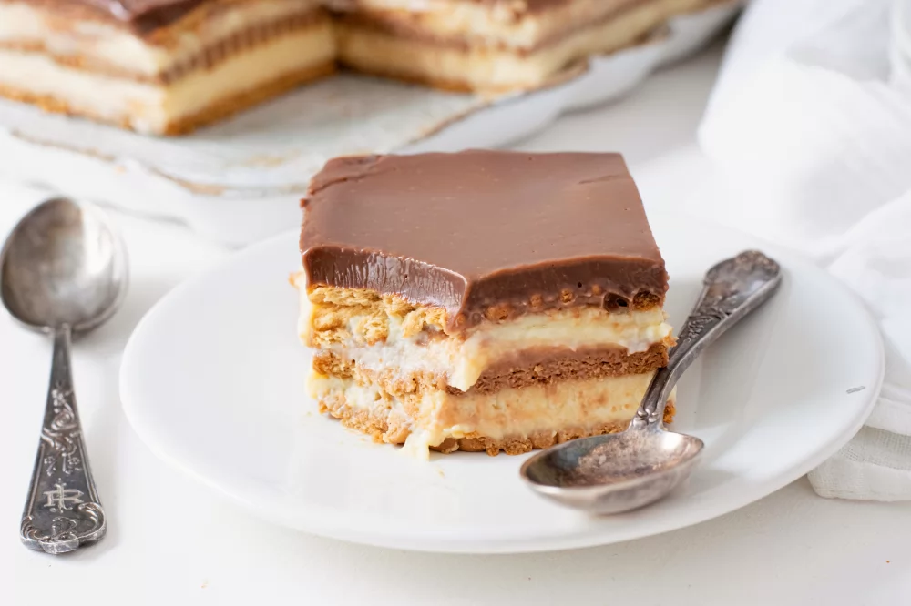

05-Imagenes: Actividad 4
Tarta de la abuela

Información de la receta
- Tiempo de preparación: 40 minutos
- Tiempo de cocinado: 30 minutos
- Tiempo total: 1 hora y 10 minutos (más los tiempos de enfriado)
- Raciones: 12
- Categoría: repostería
- Tipo de cocina: española
- Calorías por ración (kcal): 385
Ingredientes de la tarta de la abuela
- 200 g (1 tableta) de Chocolate Negro
- 100 ml de nata para montar
- 2 sobres de Preparado para flan
- 1 l de leche + 100 ml para mojar las galletas
- 3 cucharadas de azúcar
- 450 g de galletas tostadas rectangulares
Elaboración
- Disolver el preparado de flan en un vaso de leche y pon el resto en un cazo al fuego a calentar con el azúcar. Cuando rompa a hervir retirar del fuego y añadir la leche con el preparado de flan. Remover.
- Vuelve a colocar a fuego bajo y remueve continuamente hasta que empiece a espesar.
- Colocar, en un molde rectangular, una primera capa de galletas mojadas en la leche. La tarta de galletas de la abuela está a punto.
- Verter la mitad del flan y colocar otra capa de galleta. Verter la otra mitad del flan y poner una última capa de galletas. Dejar enfría en la nevera mínimo 1 hora.
- Poner la nata a calentar y cuando empiece a hervir retirar del fuego y añadir el chocolate. Remover hasta que esté fundido y verter por encima de la última capa de galletas.
- Dejar enfriar hasta que el pastel de la abuela esté cuajada, unos 30 minutos.